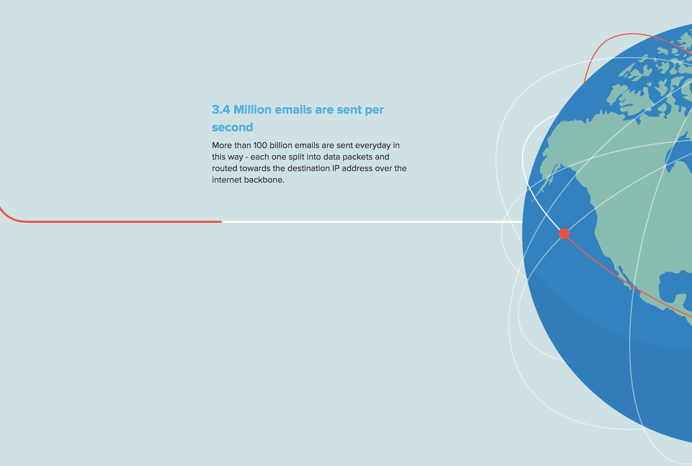

For the digital non-linear narrative project, I am not exactly sure which route I want to take. I made a list of ideas that I am interested in working with, but I have not selected which one will become my final project. My project ideas include:
Two pieces of artwork/images that inspire my ideas for this project are from the childhood show “Tom and Jerry” and from my favorite childhood book The Giving Tree. I think the simplicity of The Giving Tree would allow me to create an aesthetically pleasing yet informative non-linear narrative. The second image from “Tom and Jerry” is a bit more on the comical side, but I like the goofy animation work used in the kid’s series. This image reminds me of pop art and is a type a style that I think would go well with the parameters of this project.
On this website titled “Movement of Data”, the creators attempt to build a visual diagram of how data from “3 billion users” in 2014 travels around the world. What I like about this website is the flow of the story caused by a simple scroll of the mouse pad.
The Reverend Danger website is used to market an interactive design company while telling a non-linear story using animations. I really enjoy the movement of each animation on this website and would like to carry that aspect of this site into my final project.
Every Last Drop is a short interactive animation addressing the everyday use of water and relating it to the world water shortage crisis. Again, I really like the use of the scrolling motion on this website - I want my digital narrative to be easy to navigate, so only including the scrolling motion for this website is something that I want to stick with for the project.
Nomadic Tribe is the most interactive website out of all the ones I chose to analyze for this assignment. This colorful narrative lets the user interact with the animated nature by growing plants or making water droplets sound in the waterfall. Although I feel like this website is a little complicated with regards to its navigation, I really enjoy how user-friendly the art is.
Although I am unsure what I want my exact concept to be, I know for a fact that I want this website to be family-friendly. All the ideas I have listed come from stories I grew to love as a child and I think it would be really fun to bring those back into some of my work. Like my portfolio website, I want this project to convey my creative and yet technical sides. I want to use the web as a platform to turn a physical children’s book into an easily accessible digital story.